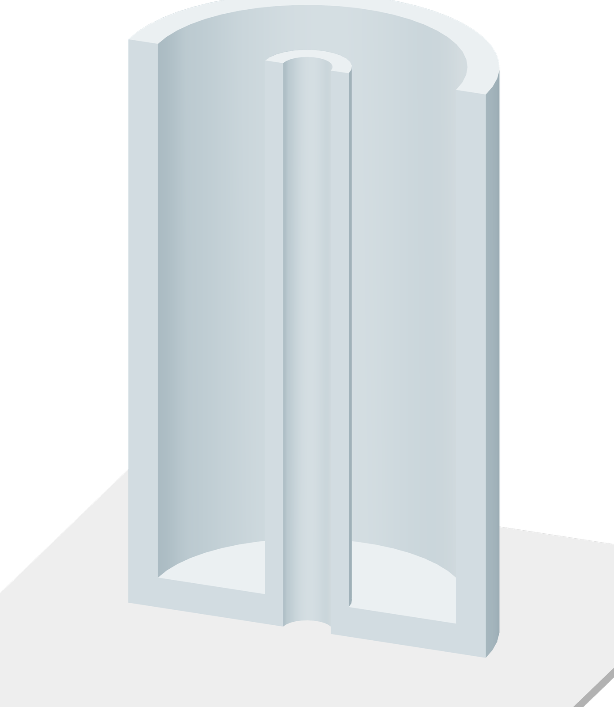

Print to the built-in pause
Start the single PETG plate. The shell stays fixed to the bed throughout insertion and roof printing.

- Print plate 1 using the left PETG feed. The job builds the 3 mm floor and both upright walls.
- When the programmed pause occurs, let the toolhead finish parking. Open the door to reach the shell.
- Leave the bed at 70 °C and the sheet mounted. Keep the shell and the printer axes in place.
The next printed layer
The pause is after Z57.00 mm, before the first roof layer at Z57.18 mm. Insert the prepared core and upper insert, then resume the same job.
Whole PETG job: about 2 h 02 min, plus your insertion time